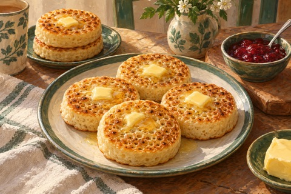

← Viikko 2 · Britannia
Sunnuntai / Aamiainen
Crumpetit, voi ja hillo
Kuusi pannulla paistettavaa aamiaisleipästä tavallisista vehnäjauhoista.

Ainekset
Määrät yhteensä 3 annokseen, myös lisukkeisiin ja mahdolliseen kasvisversioon. Vesi mainitaan valmistusohjeessa.
- Vehnäjauho180 g
- Maito150 ml
- Kuivahiiva1 tl
- Sokeri5 g
- Suola¼ tl
- Leivinjauhe½ tl
- Rypsiöljy (myös uppopaistoon)10 ml
- Voi30 g
- Hillo90 g
Valmistus
- Sekoita jauhot, hiiva, sokeri ja suola kädenlämpöiseen maitoon ja 150 ml:aan kädenlämpöistä vettä. Peitä ja anna kohota tunti, kunnes taikina kuplii.
- Sekoita leivinjauhe 15 ml:aan vettä ja vatkaa taikinaan. Taikinan tulee olla paksua mutta kaadettavaa. Lisää tarvittaessa hieman vettä.
- Öljyä kevyesti tarttumaton paistinpannu ja metalliset paistorenkaat. Kuumenna melko miedolla lämmöllä. Aseta renkaat pannulle ja kaada niihin noin 1 cm:n kerros taikinaa. Paista 8–10 minuuttia, kunnes pinnalle muodostuu reikiä ja pinta on lähes hyytynyt.
- Irrota renkaat varovasti. Käännä ja paista vielä 1–2 minuuttia. Tee yhteensä kuusi crumpettia. Ilman renkaita voit paistaa pienempiä, vapaamuotoisia leipäsiä: niistä tulee matalampia ja ne kypsyvät nopeammin. Tarjoa voin ja hillon kanssa.
Kypsymisaika riippuu laitteista ja ainesten koosta. Kypsennysohjeet (englanniksi): tarkista ohjeessa mainittu sisälämpötila puhtaalla paistomittarilla.